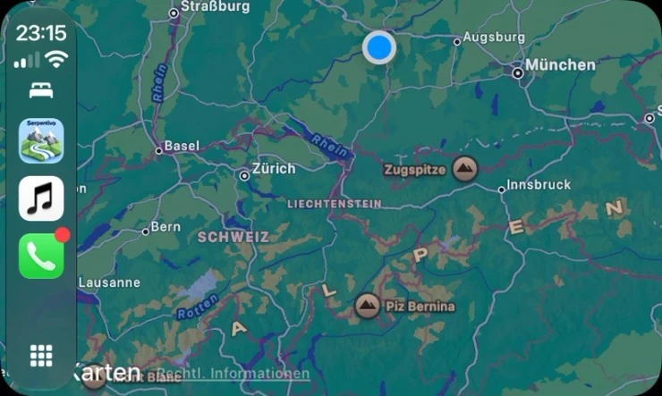
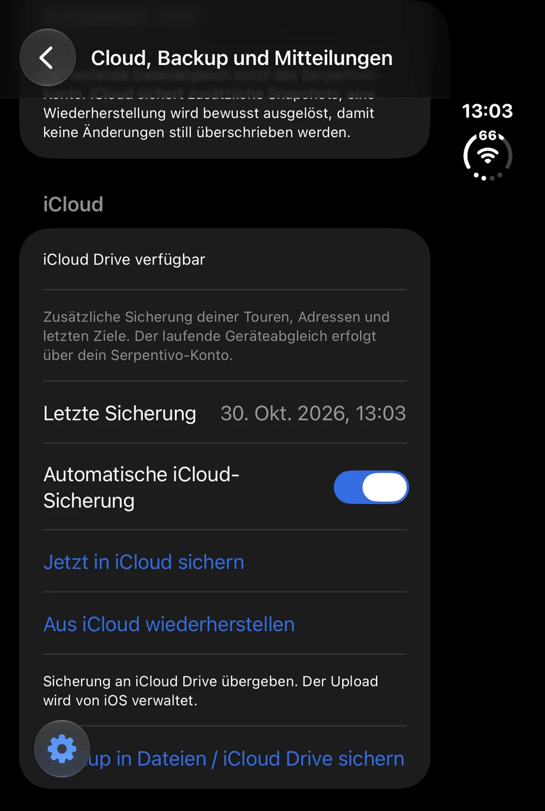
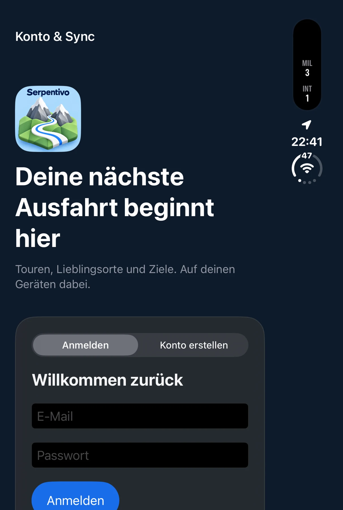

Pässe & besondere Strecken
Alpenpässe und ausgewählte Ausfahrten ansehen, Favoriten sammeln und besuchte Pässe festhalten.
SERPENTIVO · VON NW VISUALS
Alpenpässe, ausgewählte kurvige Ausfahrten und Panoramastraßen. Entdecke neue Ziele und plane deine nächste Tour mit Serpentivo.

01 / DIE APP
Serpentivo verbindet besondere Strecken mit deiner persönlichen Planung. Die Verfügbarkeit einzelner Funktionen hängt vom Teststand und den verbundenen Diensten ab.
Alpenpässe und ausgewählte Ausfahrten ansehen, Favoriten sammeln und besuchte Pässe festhalten.
Stopps zusammenstellen, Touren speichern, GPX-Dateien importieren und Routen in Apple Karten öffnen.
Nach der Anmeldung stehen Karte und allgemeine Zielsuche zur Verfügung. Persönliche Touren und Favoriten kannst du zwischen Geräten abgleichen.
Eigene Fahransicht, nächster Stopp und Sprachhinweise werden gemeinsam mit einer CarPlay-Oberfläche erprobt. Eine Live-Anzeige ergänzt den Ausfahrtsfortschritt auf dem iPhone. Auf CarPlay kannst du mit erteilter Freigabe Kalenderziele auswählen und Apple Music steuern.
Tankstellen und E-Ladesäulen in einer eigenen Vollbildkarte entdecken. Filter, Trefferliste und Stationsdetails helfen bei der Auswahl – auf dem iPhone und über die passenden CarPlay-Ansichten. Preis- und Belegungsdaten sind noch nicht angebunden.
Touren, Favoriten, gespeicherte Adressen und letzte Ziele werden kontobezogen gespeichert und mit dem erreichbaren Kontodienst abgeglichen. In Einstellungen findest du Konto & Sync, Abmelden und die Kontolöschung. Eigene Backups kannst du zusätzlich exportieren.
02 / ENTWICKLUNGSSTAND
Serpentivo 1.0.0 für iPhone und iPad befindet sich mit Build 118 in der Vorbereitung für die Einreichung. Die öffentliche Freigabe im App Store steht aus.
Serpentivo unterstützt Sprachführung, CarPlay mit Dashboard und eine Kartenansicht für kompatible Kombiinstrumente. Welche Ansichten verfügbar sind, hängt vom Fahrzeug und der CarPlay-Ausstattung ab. Gespeicherte Tourdaten kannst du offline ansehen. Gespeicherte Adressen und letzte Ziele kannst du auf dem iPhone und in CarPlay auch ohne Internet durchsuchen. Neue Routen in Serpentivo und die Stationssuche benötigen eine Internetverbindung.
Aktuelle Sperren, Verkehrszeichen und die tatsächliche Verkehrslage sind maßgeblich. Bitte prüfe die Befahrbarkeit vor deiner Ausfahrt.
Serpentivo Pro schaltet den Tourenplaner, Live-Ausfahrten und verfügbare Offline-Gebiete frei. Zur kostenlosen Nutzung gehören die allgemeine Zielsuche und Navigation sowie zwei unterschiedliche Pässe je Kalendermonat.
Verfügbare Abos, Preise und mögliche Probeangebote siehst du vor dem Kauf in der App. Leistungen, Laufzeiten und Kündigung ansehen · Bestehendes Apple-Abo verwalten
FRAGEN, FEEDBACK ODER EINE IDEE?
Alles zu Support, Datenschutz und deinem Konto findest du hier.
03 / ORIGINALAUFNAHMEN
Drei Ansichten aus unterschiedlichen Testständen: CarPlay-Karte, Datensicherung und Anmeldung. Die aktuellen Stationskarten ergänzen wir nach dem nächsten Original-Gerätetest.

